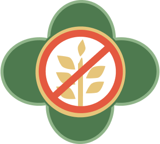
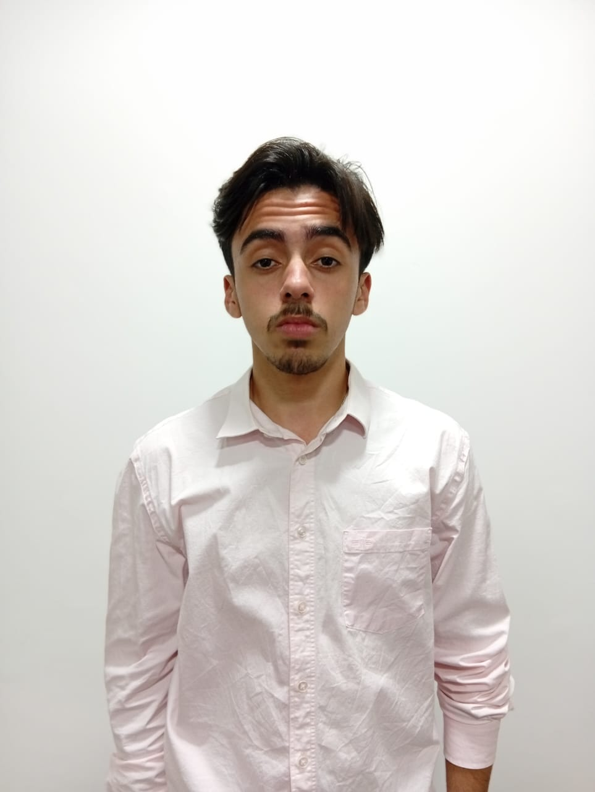
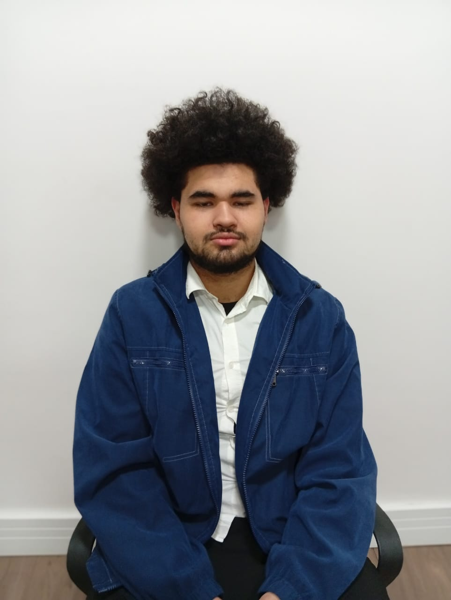
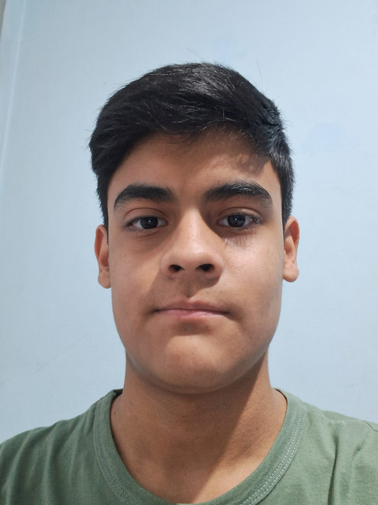

Informações para o dia a dia
Cartões interativos organizam orientações sobre doença celíaca, alimentação, rótulos e cuidados em diferentes situações.

Fracellian
Um lugar para entender a doença celíaca, encontrar respostas para o dia a dia e aprender a cuidar melhor de quem você ama.
Explore os assuntos e abra um cartão para ver orientações práticas.
Consulte os locais cadastrados e confirme as práticas diretamente com cada estabelecimento.
Fotografe o rótulo ou digite a lista para revisar termos que merecem atenção.
Enquadre a lista de ingredientes e a declaração sobre glúten com boa iluminação.
Revise o texto reconhecido na foto ou insira o texto da embalagem.
SOBRE O PROJETO
O Fracellian é um projeto de conscientização sobre a doença celíaca, criado para aproximar informações sobre a condição do cotidiano de pessoas celíacas, de suas famílias e de quem convive com elas. O conteúdo aborda cuidados com a alimentação sem glúten, leitura de rótulos, prevenção da contaminação cruzada e situações comuns, como as refeições fora de casa.
Além das orientações educativas, a plataforma reúne recursos para pesquisar locais para comer e revisar a lista de ingredientes de produtos. A proposta é facilitar o acesso à informação e apoiar decisões mais conscientes, sem garantir que um alimento ou estabelecimento seja seguro sem a devida confirmação.
Cartões interativos organizam orientações sobre doença celíaca, alimentação, rótulos e cuidados em diferentes situações.
Consulte o diretório de locais cadastrados e confirme diretamente com cada estabelecimento os ingredientes e os cuidados de preparo.
Fotografe ou insira a lista de ingredientes para destacar termos que merecem atenção. A ferramenta serve como apoio à revisão, não como confirmação de segurança.
NOSSA EQUIPE
A equipe trabalhou na pesquisa, no planejamento e na construção do projeto.
Idealizador e desenvolvedor do projeto Fracellian.

Atuou principalmente na análise dos dados da pesquisa de campo e também na documentação do projeto.

Atuou principalmente na análise dos dados da pesquisa de campo e também na documentação do projeto.

Auxiliou no desenvolvimento e na documentação do projeto.
Atuou principalmente na análise dos dados da pesquisa de campo e também na documentação do projeto.